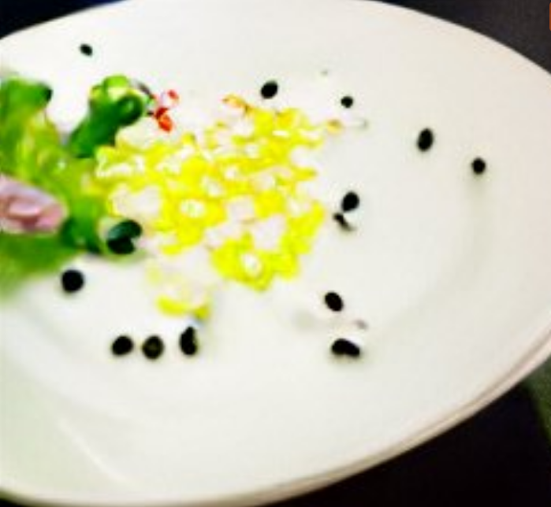

A cup o' Air

This dish was invented a few decades ago by a mad scientist looking to make the perfect food, but whom
in one experiment died tragically. Thankfully his recipe was noted in his documents and now can
be recreated by anyone willing to impress someone.
This is one of the hardest dishes you can make, you will have to go on multiple expeditions, violate
a few laws and get blacklisted from multiple countries, but in the end you will be able to make
the best food there ever is on this planet.
Ingredients
- Some amazing air from the Chernobyl's Elephant's Foot (As much as you can get)
- Brocoly (3 pieces)
- Volcanic rocks (17 pieces, each 7 grams)
Steps
- Go to Chernboyl and aquire as much air form the Elephant's Foot as you can
- Travel to a nearby active volcano and get the required rocks
- Next up, after you got the important ingredients you can start putting them in an industrial smelter
- Heat them up at 500 degrees Celcius for about 14 hours
- After that add the brocoli and keep them at that temperature for 2 more hours
- Finally, remove the output and pour it in a dish, let it break, cool off then pour the new mixture on a new dish
- Enjoy your nice meal!
- Optional: Survive the process
Main Page